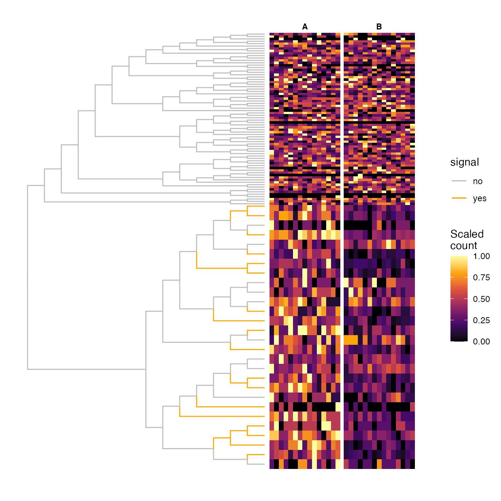
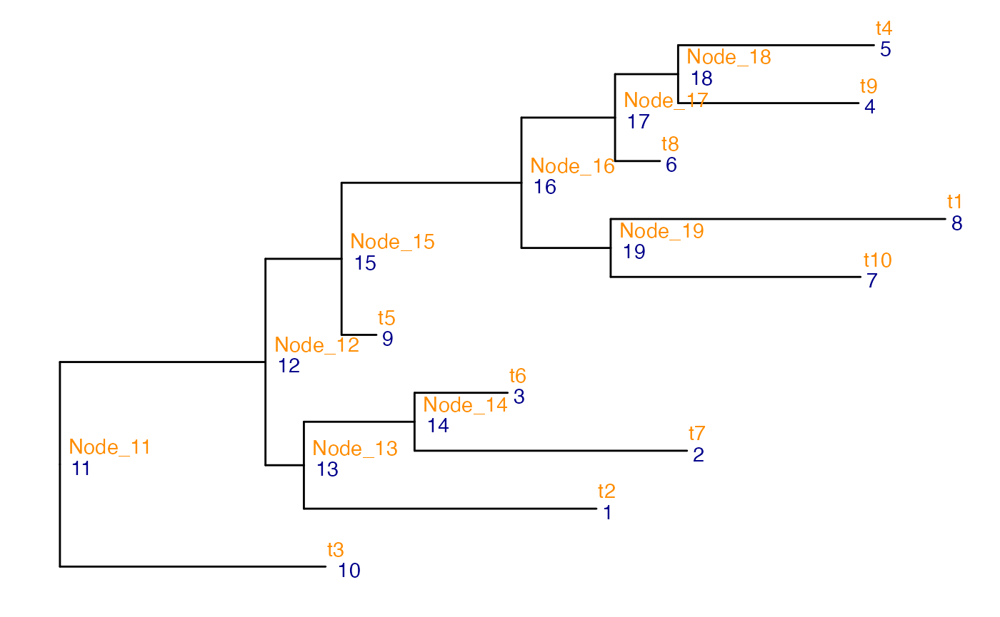

vignettes/treeclimbR.Rmd
treeclimbR.RmdtreeclimbR is a method for analyzing hierarchical trees
of entities, such as phylogenies, at different levels of resolution. It
proposes multiple candidates (corresponding to different aggregation
levels) that capture the latent signal, and pinpoints branches or leaves
that contain features of interest, in a data-driven way. One motivation
for such a multi-level analysis is that the most highly resolved
entities (e.g., individual species in a microbial context) may not be
abundant enough to allow a potential abundance difference between
conditions to be reliably detected. Aggregating abundances on a higher
level in the tree can detect families of species that are closely
related and that all change (possibly weakly but) concordantly. At the
same time, blindly aggregating to a higher level across the whole tree
may imply losing the ability to pinpoint specific species with a strong
signal that may not be shared with their closest neighbors in the tree.
Taken together, this motivates the development of a data-dependent
aggregation approach, which is also allowed to aggregate different parts
of the tree at different levels of resolution.
If you are using treeclimbR, please cite Huang et al. (2021), which also contains the
theoretical justifications and more details of the method.
treeclimbR can be installed from Bioconductor using the
following code:
if (!require("BiocManager", quietly = TRUE))
install.packages("BiocManager")
BiocManager::install("treeclimbR")It integrates seamlessly with the
TreeSummarizedExperiment class, which allows observed data,
feature and sample annotations, as well as a tree representing the
hierarchical relationship among features (or samples) to be stored in
the same object.
This vignette outlines the main functionality of
treeclimbR, using simulated example data provided with the
package. We start by loading the packages that will be needed in the
analyses below.
suppressPackageStartupMessages({
library(TreeSummarizedExperiment)
library(treeclimbR)
library(ggtree)
library(dplyr)
library(ggplot2)
})The differential abundance (DA) workflow in treeclimbR
is suitable in situations where we have observed abundances (often
counts) of a set of entities in a set of samples, the entities can be
represented as leaves of a given tree, and we are interested in finding
entities (or groups of entities in the same subtree) whose abundance is
associated with some sample phenotype (e.g., different between two
conditions). For example, in Huang et al.
(2021) we studied differences in the abundance of microbial
species between babies born vaginally or via C-section. We also
investigated differences in miRNA abundances between groups of mice
receiving transaortic constriction or sham surgery, and cell type
abundance differences between conditions at different clustering
granularities. In all these cases, the entities are naturally
represented as leaves in a tree (a phylogenetic tree in the first case,
a tree where internal nodes represent miRNA duplexes, primary
transcripts, and clusters of miRNAs for the second, and a clustering
tree defined based on the average similarity between baseline
high-resolution cell clusters for the third).
In this vignette, we will work with a simulated data set with 30
samples (15 from each of two conditions) and 100 features. 18 of the
features are differentially abundant between the two conditions; this
information is stored in the Signal column of the object’s
rowData. The features represent leaves in a tree, and the
data is stored in a TreeSummarizedExperiment object. Below,
we first load the data and visualize the tree and the corresponding
data.
## Read data
da_lse <- readRDS(system.file("extdata", "da_sim_100_30_18de.rds",
package = "treeclimbR"))
da_lse
#> class: TreeSummarizedExperiment
#> dim: 100 30
#> metadata(1): parentNodeForSignal
#> assays(1): counts
#> rownames(100): t8 t85 ... t45 t92
#> rowData names(1): Signal
#> colnames(30): A_1 A_2 ... B_29 B_30
#> colData names(1): group
#> reducedDimNames(0):
#> mainExpName: NULL
#> altExpNames(0):
#> rowLinks: a LinkDataFrame (100 rows)
#> rowTree: 1 phylo tree(s) (100 leaves)
#> colLinks: NULL
#> colTree: NULL
## Generate tree visualization where true signal leaves are colored orange
## ...Find internal nodes in the subtrees where all leaves are differentially
## abundant. These will be colored orange.
nds <- joinNode(tree = rowTree(da_lse),
node = rownames(da_lse)[rowData(da_lse)$Signal])
br <- unlist(findDescendant(tree = rowTree(da_lse), node = nds,
only.leaf = FALSE, self.include = TRUE))
df_color <- data.frame(node = showNode(tree = rowTree(da_lse),
only.leaf = FALSE)) |>
mutate(signal = ifelse(node %in% br, "yes", "no"))
## ...Generate tree
da_fig_tree <- ggtree(tr = rowTree(da_lse), layout = "rectangular",
branch.length = "none",
aes(color = signal)) %<+% df_color +
scale_color_manual(values = c(no = "grey", yes = "orange"))
## ...Zoom into the subtree defined by a particular node. In this case, we
## know that all true signal leaves were sampled from the subtree defined
## by a particular node (stored in metadata(da_lse)$parentNodeForSignal).
da_fig_tree <- scaleClade(da_fig_tree,
node = metadata(da_lse)$parentNodeForSignal,
scale = 4)
## Extract count matrix and scale each row to [0, 1]
count <- assay(da_lse, "counts")
scale_count <- t(apply(count, 1, FUN = function(x) {
xx <- x
rx <- (max(xx) - min(xx))
(xx - min(xx))/max(rx, 1)
}))
rownames(scale_count) <- rownames(count)
colnames(scale_count) <- colnames(count)
## Plot tree and heatmap of scaled counts
## ...Generate sample annotation
vv <- gsub(pattern = "_.*", "", colnames(count))
names(vv) <- colnames(scale_count)
anno_c <- structure(vv, names = vv)
TreeHeatmap(tree = rowTree(da_lse), tree_fig = da_fig_tree,
hm_data = scale_count, legend_title_hm = "Scaled\ncount",
column_split = vv, rel_width = 0.6,
tree_hm_gap = 0.3,
column_split_label = anno_c) +
scale_fill_viridis_c(option = "B") +
scale_y_continuous(expand = c(0, 10))
#> Scale for fill is already present.
#> Adding another scale for fill, which will replace the existing scale.
#> Scale for y is already present.
#> Adding another scale for y, which will replace the existing scale.
treeclimbR provides functionality to find an ‘optimal’
aggregation level at which to interpret hierarchically structured data.
Starting from the TreeSummarizedExperiment above
(containing the observed data as well as the tree for the features), the
first step is to calculate aggregated values (in this case, counts) for
all internal nodes. This is needed so that we can then run a
differential abundance analysis on leaves and nodes simultaneously. The
results from that analysis will then be used to find the optimal
aggregation level.
Here, we use the aggTSE function from the
TreeSummarizedExperiment package to calculate an aggregated
count for each internal node in the tree by summing the counts for all
its descendant leaves. For other applications, other aggregation methods
(e.g., averaging) may be more suitable. This can be controlled via the
rowFun argument.
## Get a list of all node IDs
all_node <- showNode(tree = rowTree(da_lse), only.leaf = FALSE)
## Calculate counts for internal nodes
da_tse <- aggTSE(x = da_lse, rowLevel = all_node, rowFun = sum)
da_tse
#> class: TreeSummarizedExperiment
#> dim: 199 30
#> metadata(1): parentNodeForSignal
#> assays(1): counts
#> rownames(199): alias_1 alias_2 ... alias_198 alias_199
#> rowData names(1): Signal
#> colnames(30): A_1 A_2 ... B_29 B_30
#> colData names(1): group
#> reducedDimNames(0):
#> mainExpName: NULL
#> altExpNames(0):
#> rowLinks: a LinkDataFrame (199 rows)
#> rowTree: 1 phylo tree(s) (100 leaves)
#> colLinks: NULL
#> colTree: NULLWe see that the new TreeSummarizedExperiment now has 199
rows (representing the original leaves + the internal nodes).
Next, we perform differential abundance analysis for each leaf and
node, comparing the average abundance in the two conditions. Here, any
suitable function can be used (depending on the properties of the data
matrix). treeclimbR provides a convenience function to
perform the differential abundance analysis using edgeR,
which we will use here. We will ask the wrapper function to filter out
lowly abundant features (with a total count below 15).
## Run differential analysis
da_res <- runDA(da_tse, assay = "counts", option = "glmQL",
design = model.matrix(~ group, data = colData(da_tse)),
contrast = c(0, 1), filter_min_count = 0,
filter_min_prop = 0, filter_min_total_count = 15)The output of runDA contains the edgeR
results, a list of the nodes that were dropped due to a low total count,
and the tree.
names(da_res)
#> [1] "edgeR_results" "nodes_drop" "tree"
class(da_res$edgeR_results)
#> [1] "DGELRT"
#> attr(,"package")
#> [1] "edgeR"
## Nodes with too low total count
da_res$nodes_drop
#> [1] "alias_32" "alias_33" "alias_40" "alias_44" "alias_51" "alias_68"
#> [7] "alias_87" "alias_97" "alias_98" "alias_134"Again, note that any differential abundance method can be used, as
long as it produces a data frame with at least columns corresponding to
the node number, the p-value, and the inferred effect size (only the
sign will be used). For the runDA output, we can generate
such a table with the nodeResult() function (where the
PValue column contains the p-value, and the
logFC column provides information about the sign of the
inferred change):
da_tbl <- nodeResult(da_res, n = Inf, type = "DA")
dim(da_tbl)
#> [1] 189 6
head(da_tbl)
#> node logFC logCPM F PValue FDR
#> alias_102 102 -0.6290963 18.47205 231.23013 2.541684e-23 4.803782e-21
#> alias_114 114 -0.5748841 17.74475 121.59366 1.177694e-16 1.112921e-14
#> alias_103 103 -0.7103916 17.17136 106.80756 1.830949e-15 1.153498e-13
#> alias_115 115 -0.5948226 17.40516 103.04368 3.822717e-15 1.806234e-13
#> alias_116 116 -0.6789849 16.78855 73.81487 2.204821e-12 8.334225e-11
#> alias_110 110 -0.8245494 16.18132 64.07680 2.489723e-11 7.842629e-10Next, treeclimbR proposes a set of aggregation
candidates, corresponding to a range of values for a threshold
parameter \(t\) (see (Huang et al. 2021)). A candidate consists of a
set of nodes, representing a specific pattern of aggregation. In
general, higher values of \(t\) lead to
aggregation further up in the tree (closer to the root).
## Get candidates
da_cand <- getCand(tree = rowTree(da_tse), score_data = da_tbl,
node_column = "node", p_column = "PValue",
threshold = 0.05, sign_column = "logFC", message = FALSE)For a given \(t\)-value, we can indicate the corresponding candidate in the tree. Note that at this point, we have not yet selected the optimal aggregation level, nor are we making conclusions about which of the retained nodes show a significant difference between the conditions. The visualization thus simply illustrates which leaves would be aggregated together if this candidate were to be chosen.
## All candidates
names(da_cand$candidate_list)
#> [1] "0" "0.01" "0.02" "0.03" "0.04" "0.05" "0.1" "0.15" "0.2" "0.25"
#> [11] "0.3" "0.35" "0.4" "0.45" "0.5" "0.55" "0.6" "0.65" "0.7" "0.75"
#> [21] "0.8" "0.85" "0.9" "0.95" "1"
## Nodes contained in the candidate corresponding to t = 0.03
## This is a mix of leaves and internal nodes
(da_cand_0.03 <- da_cand$candidate_list[["0.03"]])
#> [1] 1 2 5 6 7 8 9 10 11 12 15 16 17 18 21 22 23 24 25
#> [20] 26 27 28 29 30 31 34 35 36 37 38 39 41 42 43 45 46 47 48
#> [39] 49 50 52 53 54 55 56 57 58 59 60 61 62 63 64 65 66 67 69
#> [58] 70 71 72 73 74 75 76 77 78 79 80 81 82 83 84 85 86 88 89
#> [77] 90 91 92 93 94 95 96 99 100 108 122 117
## Visualize candidate
da_fig_tree +
geom_point2(aes(subset = (node %in% da_cand_0.03)),
color = "navy", size = 0.5) +
labs(title = "t = 0.03") +
theme(legend.position = "none",
plot.title = element_text(color = "navy", size = 7,
hjust = 0.5, vjust = -0.08))Finally, given the set of candidates extracted above,
treeclimbR can now extract the one providing the optimal
aggregation level (Huang et al. 2021).
## Evaluate candidates
da_best <- evalCand(tree = rowTree(da_tse), levels = da_cand$candidate_list,
score_data = da_tbl, node_column = "node",
p_column = "PValue", sign_column = "logFC")We can get a summary of all the candidates, as well as an indication
of which treeclimbR considers the optimal one, using the
infoCand function:
infoCand(object = da_best)
#> t upper_t is_valid method limit_rej level_name best rej_leaf rej_node
#> 1 0.00 0.02142857 TRUE BH 0.05 0 FALSE 17 17
#> 2 0.01 0.02142857 TRUE BH 0.05 0.01 TRUE 17 14
#> 3 0.02 0.02142857 TRUE BH 0.05 0.02 TRUE 17 14
#> 4 0.03 0.02142857 FALSE BH 0.05 0.03 FALSE 17 14
#> 5 0.04 0.02142857 FALSE BH 0.05 0.04 FALSE 17 14
#> 6 0.05 0.03846154 FALSE BH 0.05 0.05 FALSE 18 13
#> 7 0.10 0.05000000 FALSE BH 0.05 0.1 FALSE 21 14
#> 8 0.15 0.05000000 FALSE BH 0.05 0.15 FALSE 21 14
#> 9 0.20 0.05000000 FALSE BH 0.05 0.2 FALSE 21 14
#> 10 0.25 0.06923077 FALSE BH 0.05 0.25 FALSE 22 13
#> 11 0.30 0.09166667 FALSE BH 0.05 0.3 FALSE 23 12
#> 12 0.35 0.09166667 FALSE BH 0.05 0.35 FALSE 23 12
#> 13 0.40 0.09166667 FALSE BH 0.05 0.4 FALSE 23 12
#> 14 0.45 0.09166667 FALSE BH 0.05 0.45 FALSE 23 12
#> 15 0.50 0.09166667 FALSE BH 0.05 0.5 FALSE 23 12
#> 16 0.55 0.09166667 FALSE BH 0.05 0.55 FALSE 23 12
#> 17 0.60 0.09166667 FALSE BH 0.05 0.6 FALSE 23 12
#> 18 0.65 0.09166667 FALSE BH 0.05 0.65 FALSE 23 12
#> 19 0.70 0.09166667 FALSE BH 0.05 0.7 FALSE 23 12
#> 20 0.75 0.09166667 FALSE BH 0.05 0.75 FALSE 23 12
#> 21 0.80 0.09166667 FALSE BH 0.05 0.8 FALSE 23 12
#> 22 0.85 0.09166667 FALSE BH 0.05 0.85 FALSE 23 12
#> 23 0.90 0.09166667 FALSE BH 0.05 0.9 FALSE 23 12
#> 24 0.95 0.09166667 FALSE BH 0.05 0.95 FALSE 23 12
#> 25 1.00 0.10000000 FALSE BH 0.05 1 FALSE 22 11We can also extract a vector of significant nodes from the optimal candidate.
da_out <- topNodes(object = da_best, n = Inf, p_value = 0.05)These nodes can then be indicated in the tree.
da_fig_tree +
geom_point2(aes(subset = node %in% da_out$node),
color = "red")This visualization shows that in most cases, we correctly identify groups of leaves changing synchronously, and we don’t combine true signal nodes with non-changing ones.
In this case, since we are working with simulated data, we can
estimate the (leaf-level) false discovery rate and true positive rate
for the significant nodes. treeclimbR will automatically
extract the descendant leaves for each of the provided nodes, and
perform the evaluation on the leaf level.
treeclimbR also provides functionality for performing so
called ‘differential state analysis’ in a hierarchical setting. An
example use case for this type of analysis is in a multi-sample,
multi-condition single-cell RNA-seq data set with multiple cell types,
where we are interested in finding genes that are differentially
expressed between conditions in either a single (high-resolution) cell
type (subpopulation) or a group of similar cell subpopulations.
We load a simulated example data set with 20 genes and 500 cells. The
cells are assigned to 10 initial (high-resolution) clusters or
subpopulations (labelled ‘t1’ to ‘t10’), which are further
hierarchically clustered into larger meta-clusters. The hierarchical
clustering tree for the subpopulations is provided as the column tree of
the TreeSummarizedExperiment object. In addition, the cells
come from four different samples (two from condition ‘A’ and two from
condition ‘B’). We are interested in finding genes that are
differentially expressed between the conditions (so called ‘state
markers’) at some level of the clustering tree.
ds_tse <- readRDS(system.file("extdata", "ds_sim_20_500_8de.rds",
package = "treeclimbR"))
ds_tse
#> class: TreeSummarizedExperiment
#> dim: 20 500
#> metadata(0):
#> assays(1): counts
#> rownames: NULL
#> rowData names(1): Signal
#> colnames: NULL
#> colData names(3): cluster_id sample_id group
#> reducedDimNames(0):
#> mainExpName: NULL
#> altExpNames(0):
#> rowLinks: NULL
#> rowTree: NULL
#> colLinks: a LinkDataFrame (500 rows)
#> colTree: 1 phylo tree(s) (10 leaves)
## Assignment of cells to high-resolution clusters, samples and conditions
head(colData(ds_tse))
#> DataFrame with 6 rows and 3 columns
#> cluster_id sample_id group
#> <character> <integer> <character>
#> 1 t7 4 B
#> 2 t7 4 B
#> 3 t1 4 B
#> 4 t4 1 A
#> 5 t6 1 A
#> 6 t1 1 A
## Tree providing the successive aggregation of the high-resolution clusters
## into more coarse-grained ones
## Node numbers are indicated in blue, node labels in orange
ggtree(colTree(ds_tse)) +
geom_text2(aes(label = node), color = "darkblue",
hjust = -0.5, vjust = 0.7) +
geom_text2(aes(label = label), color = "darkorange",
hjust = -0.1, vjust = -0.7)
The data set contains 8 genes that are simulated to be differentially
expressed between the two conditions. Four genes are differentially
expressed in all the clusters, two in clusters t2,
t6 and t7, and two in clusters t4
and t5.
As for the DA analysis, the first step is to aggregate the counts for the internal nodes. In this use case, it effectively corresponds to generating pseudobulk samples for each original sample and each internal node in the tree.
ds_se <- aggDS(TSE = ds_tse, assay = "counts", sample_id = "sample_id",
group_id = "group", cluster_id = "cluster_id", FUN = sum)
#> Warning in TreeSummarizedExperiment::convertNode(tree = tree, node =
#> as.character(cell_info$cluster_id)): Multiple nodes are found to have the same
#> label.
ds_se
#> class: SummarizedExperiment
#> dim: 20 4
#> metadata(3): experiment_info agg_pars n_cells
#> assays(19): alias_1 alias_2 ... alias_18 alias_19
#> rownames: NULL
#> rowData names(0):
#> colnames(4): 4 1 2 3
#> colData names(1): groupNote how there is now one assay for each node in the tree (ten for the leaves and nine for the internal nodes). Each of these assays contains the aggregated counts for all genes in all cells belonging to the corresponding node, split by sample ID.
This object also stores information about the number of cells contributing to each node and sample
metadata(ds_se)$n_cells
#> 4 1 2 3
#> alias_1 10 8 14 12
#> alias_2 17 12 10 14
#> alias_3 9 9 18 11
#> alias_4 14 13 14 7
#> alias_5 11 9 13 14
#> alias_6 15 14 13 12
#> alias_7 16 18 16 13
#> alias_8 17 13 15 7
#> alias_9 7 12 13 13
#> alias_10 12 11 12 12
#> alias_11 128 119 138 115
#> alias_12 116 108 126 103
#> alias_13 36 29 42 37
#> alias_14 26 21 28 25
#> alias_15 80 79 84 66
#> alias_16 73 67 71 53
#> alias_17 40 36 40 33
#> alias_18 25 22 27 21
#> alias_19 33 31 31 20Next, we perform the differential analysis. As for the DA analysis
above, treeclimbR provides a convenience function for
applying edgeR on the aggregated counts for each node.
However, any suitable method can be used.
ds_res <- runDS(SE = ds_se, tree = colTree(ds_tse), option = "glmQL",
design = model.matrix(~ group, data = colData(ds_se)),
contrast = c(0, 1), filter_min_count = 0,
filter_min_total_count = 1, filter_min_prop = 0, min_cells = 5,
group_column = "group", message = FALSE)
#> 0 nodes are ignored, as they don't contain at least 5 cells in at least half of the samples.As before, the output contains the edgeR results for
each node, the tree, and the list of nodes that were dropped because of
a too low count.
names(ds_res)
#> [1] "edgeR_results" "tree" "nodes_drop"
names(ds_res$edgeR_results)
#> [1] "alias_1" "alias_2" "alias_3" "alias_4" "alias_5" "alias_6"
#> [7] "alias_7" "alias_8" "alias_9" "alias_10" "alias_11" "alias_12"
#> [13] "alias_13" "alias_14" "alias_15" "alias_16" "alias_17" "alias_18"
#> [19] "alias_19"We can create a table with the node results as well. Note that this table contains the results from all genes (features) at all nodes.
ds_tbl <- nodeResult(ds_res, type = "DS", n = Inf)
dim(ds_tbl)
#> [1] 380 7
head(ds_tbl)
#> logFC logCPM F PValue FDR node feature
#> 3...1 1.646616 16.31850 2758.468 1.599434e-38 6.077849e-36 11 3
#> 5...2 -1.577228 16.18364 2634.842 3.949545e-38 7.504136e-36 13 5
#> 6...3 -1.633327 16.19005 2551.386 7.446819e-38 9.432638e-36 13 6
#> 1...4 1.623166 16.28457 2237.433 9.866162e-37 9.372854e-35 11 1
#> 6...5 -1.566620 16.27571 1962.617 1.293029e-35 9.827017e-34 11 6
#> 5...6 -1.529990 16.26806 1808.583 6.414163e-35 4.062303e-33 11 5The next step in the analysis is to generate a list of candidates.
This is done separately for each gene - hence, we first split the result
table above by the feature column, and then run
getCand() for each subtable.
## Split result table by feature
ds_tbl_list <- split(ds_tbl, f = ds_tbl$feature)
## Find candidates for each gene separately
ds_cand_list <- lapply(seq_along(ds_tbl_list),
FUN = function(x) {
getCand(
tree = colTree(ds_tse),
t = seq(from = 0.05, to = 1, by = 0.05),
score_data = ds_tbl_list[[x]],
node_column = "node",
p_column = "PValue",
sign_column = "logFC",
message = FALSE)$candidate_list
})
names(ds_cand_list) <- names(ds_tbl_list)We can then find the optimal candidate using the
evalCand() function, and list the top hits.
ds_best <- evalCand(tree = colTree(ds_tse), type = "multiple",
levels = ds_cand_list, score_data = ds_tbl_list,
node_column = "node",
p_column = "PValue",
sign_column = "logFC",
feature_column = "feature",
limit_rej = 0.05,
message = FALSE,
use_pseudo_leaf = FALSE)
ds_out <- topNodes(object = ds_best, n = Inf, p_value = 0.05)
ds_out
#> logFC logCPM F PValue FDR node feature
#> 1 1.6231662 16.28457 2237.4326 9.866162e-37 9.372854e-35 11 1
#> 13 -0.2425114 15.32238 12.2388 1.163025e-03 4.130369e-03 9 13
#> 2 1.5371994 16.20796 1704.7643 2.039174e-34 1.106980e-32 13 2
#> 3 1.6466158 16.31850 2758.4677 1.599434e-38 6.077849e-36 11 3
#> 4 -1.6122045 16.25077 1017.7976 4.563616e-30 1.238696e-28 13 4
#> 5 -1.5299895 16.26806 1808.5827 6.414163e-35 4.062303e-33 11 5
#> 6 -1.5666200 16.27571 1962.6171 1.293029e-35 9.827017e-34 11 6
#> 7...8 1.3222125 16.11680 1283.8522 3.772383e-13 2.606374e-12 5 7
#> 7...9 1.6572261 16.10320 516.3906 1.766865e-24 3.357044e-23 9 7
#> 8...10 -1.5238145 16.26492 749.1655 8.049489e-12 5.184417e-11 5 8
#> 8...11 -1.6918749 16.34385 182.3817 1.730751e-16 1.289579e-15 9 8
#> adj.p signal.node
#> 1 7.892930e-35 TRUE
#> 13 1.691673e-02 TRUE
#> 2 6.525355e-33 TRUE
#> 3 2.559094e-36 TRUE
#> 4 1.216964e-28 TRUE
#> 5 2.565665e-33 TRUE
#> 6 6.896152e-34 TRUE
#> 7...8 6.706459e-12 TRUE
#> 7...9 4.038550e-23 TRUE
#> 8...10 1.287918e-10 TRUE
#> 8...11 3.461502e-15 TRUEAs expected, we detect the eight truly differentially expressed features (feature 1-8). Furthermore, we see that they have been aggregated to different nodes in the tree. Features 1, 3, 5 and 6 are aggregated to node 11, features 2 and 4 to node 13, and features 7 and 8 to nodes 5 and 9. Let’s see which leaves these internal nodes correspond to.
lapply(findDescendant(colTree(ds_tse), node = c(11, 13, 5, 9),
self.include = TRUE,
use.alias = FALSE, only.leaf = TRUE),
function(x) convertNode(colTree(ds_tse), node = x))
#> $Node_11
#> [1] "t2" "t7" "t6" "t9" "t4" "t8" "t10" "t1" "t5" "t3"
#>
#> $Node_13
#> [1] "t2" "t7" "t6"
#>
#> $t4
#> [1] "t4"
#>
#> $t5
#> [1] "t5"Indeed, comparing this to the ground truth provided above, we see that each gene has been aggregated to the lowest node level that contains all the original subpopulations where the gene was simulated to be differentially expressed between conditions A and B:
Additional examples of applying treeclimbR to
experimental data sets can be found on GitHub.
sessionInfo()
#> R Under development (unstable) (2024-03-16 r86144)
#> Platform: x86_64-apple-darwin20
#> Running under: macOS Monterey 12.7.3
#>
#> Matrix products: default
#> BLAS: /Library/Frameworks/R.framework/Versions/4.4-x86_64/Resources/lib/libRblas.0.dylib
#> LAPACK: /Library/Frameworks/R.framework/Versions/4.4-x86_64/Resources/lib/libRlapack.dylib; LAPACK version 3.12.0
#>
#> locale:
#> [1] en_US.UTF-8/en_US.UTF-8/en_US.UTF-8/C/en_US.UTF-8/en_US.UTF-8
#>
#> time zone: UTC
#> tzcode source: internal
#>
#> attached base packages:
#> [1] stats4 stats graphics grDevices utils datasets methods
#> [8] base
#>
#> other attached packages:
#> [1] ggplot2_3.5.0 dplyr_1.1.4
#> [3] ggtree_3.11.1 treeclimbR_0.99.1
#> [5] TreeSummarizedExperiment_2.11.0 Biostrings_2.71.4
#> [7] XVector_0.43.1 SingleCellExperiment_1.25.0
#> [9] SummarizedExperiment_1.33.3 Biobase_2.63.0
#> [11] GenomicRanges_1.55.3 GenomeInfoDb_1.39.9
#> [13] IRanges_2.37.1 S4Vectors_0.41.4
#> [15] BiocGenerics_0.49.1 MatrixGenerics_1.15.0
#> [17] matrixStats_1.2.0 BiocStyle_2.31.0
#>
#> loaded via a namespace (and not attached):
#> [1] RColorBrewer_1.1-3 jsonlite_1.8.8
#> [3] shape_1.4.6.1 magrittr_2.0.3
#> [5] TH.data_1.1-2 farver_2.1.1
#> [7] nloptr_2.0.3 rmarkdown_2.26
#> [9] GlobalOptions_0.1.2 fs_1.6.3
#> [11] zlibbioc_1.49.3 ragg_1.3.0
#> [13] vctrs_0.6.5 memoise_2.0.1
#> [15] minqa_1.2.6 RCurl_1.98-1.14
#> [17] rstatix_0.7.2 htmltools_0.5.7
#> [19] S4Arrays_1.3.6 broom_1.0.5
#> [21] gridGraphics_0.5-1 SparseArray_1.3.4
#> [23] sass_0.4.9 bslib_0.6.1
#> [25] desc_1.4.3 plyr_1.8.9
#> [27] sandwich_3.1-0 zoo_1.8-12
#> [29] cachem_1.0.8 igraph_2.0.3
#> [31] lifecycle_1.0.4 iterators_1.0.14
#> [33] pkgconfig_2.0.3 Matrix_1.6-5
#> [35] R6_2.5.1 fastmap_1.1.1
#> [37] GenomeInfoDbData_1.2.11 clue_0.3-65
#> [39] aplot_0.2.2 digest_0.6.35
#> [41] colorspace_2.1-0 ggnewscale_0.4.10
#> [43] patchwork_1.2.0 textshaping_0.3.7
#> [45] ggpubr_0.6.0 labeling_0.4.3
#> [47] cytolib_2.15.2 fansi_1.0.6
#> [49] colorRamps_2.3.4 polyclip_1.10-6
#> [51] abind_1.4-5 compiler_4.4.0
#> [53] withr_3.0.0 doParallel_1.0.17
#> [55] ConsensusClusterPlus_1.67.0 backports_1.4.1
#> [57] BiocParallel_1.37.1 viridis_0.6.5
#> [59] carData_3.0-5 highr_0.10
#> [61] ggforce_0.4.2 ggsignif_0.6.4
#> [63] MASS_7.3-60.2 DelayedArray_0.29.9
#> [65] rjson_0.2.21 FlowSOM_2.11.0
#> [67] diffcyt_1.23.0 tools_4.4.0
#> [69] ape_5.7-1 glue_1.7.0
#> [71] nlme_3.1-164 grid_4.4.0
#> [73] Rtsne_0.17 reshape2_1.4.4
#> [75] cluster_2.1.6 generics_0.1.3
#> [77] gtable_0.3.4 tidyr_1.3.1
#> [79] car_3.1-2 utf8_1.2.4
#> [81] stringr_1.5.1 foreach_1.5.2
#> [83] pillar_1.9.0 yulab.utils_0.1.4
#> [85] limma_3.59.6 circlize_0.4.16
#> [87] splines_4.4.0 flowCore_2.15.3
#> [89] tweenr_2.0.3 treeio_1.27.0
#> [91] lattice_0.22-5 survival_3.5-8
#> [93] dirmult_0.1.3-5 RProtoBufLib_2.15.1
#> [95] tidyselect_1.2.1 ComplexHeatmap_2.19.0
#> [97] locfit_1.5-9.9 knitr_1.45
#> [99] gridExtra_2.3 bookdown_0.38
#> [101] edgeR_4.1.18 xfun_0.42
#> [103] statmod_1.5.0 stringi_1.8.3
#> [105] ggfun_0.1.4 lazyeval_0.2.2
#> [107] yaml_2.3.8 boot_1.3-30
#> [109] evaluate_0.23 codetools_0.2-19
#> [111] tibble_3.2.1 BiocManager_1.30.22
#> [113] ggplotify_0.1.2 cli_3.6.2
#> [115] systemfonts_1.0.6 munsell_0.5.0
#> [117] jquerylib_0.1.4 Rcpp_1.0.12
#> [119] png_0.1-8 XML_3.99-0.16.1
#> [121] parallel_4.4.0 pkgdown_2.0.7.9000
#> [123] bitops_1.0-7 lme4_1.1-35.1
#> [125] viridisLite_0.4.2 mvtnorm_1.2-4
#> [127] tidytree_0.4.6 scales_1.3.0
#> [129] purrr_1.0.2 crayon_1.5.2
#> [131] GetoptLong_1.0.5 rlang_1.1.3
#> [133] multcomp_1.4-25